Three seemingly unrelated trends — creatine going mainstream in snack foods, the Crumbl-fueled rise of indulgent-but-clean treats, and grocers scrambling to add protein to in-store bakery — converge into a single white-space category we're calling Performance Bakery. The in-store bakery aisle is a $25B category that hasn't been functionally innovated since the introduction of the croissant. Meanwhile, the creatine market is growing 12%+ annually, the protein snack market cleared $7B in 2025, and consumer demand for clean-label indulgence has never been higher. This workshop generated 32 raw concepts across 10 methods, scored and filtered to 20 survivors.
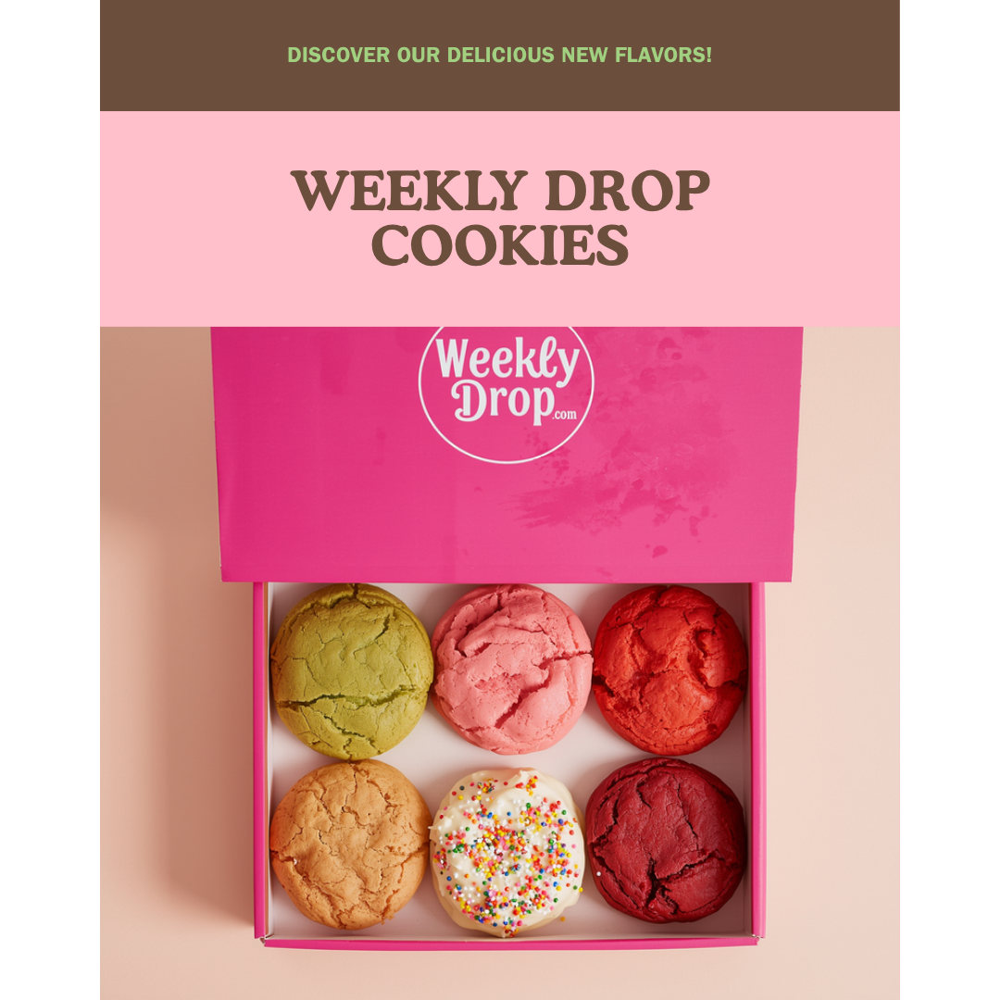
Weekly rotating protein cookie flavors with social-first drops. Proven business model meets the hottest functional ingredient trend.
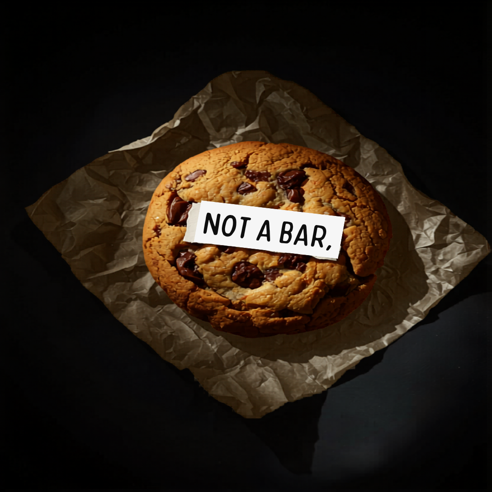
Fresh bakery item positioned explicitly against the processed protein bar aisle. Real food, real ingredients, no wrapper.
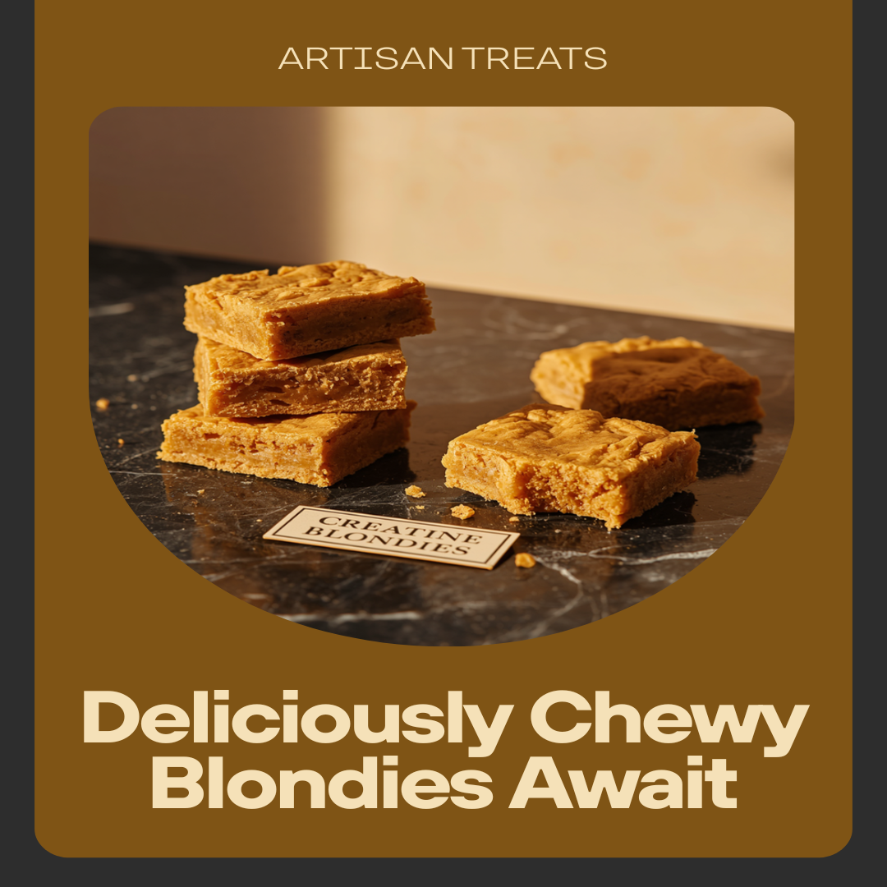
5g creatine monohydrate in a chewy blondie bar. First mover in creatine + bakery = owns the category.
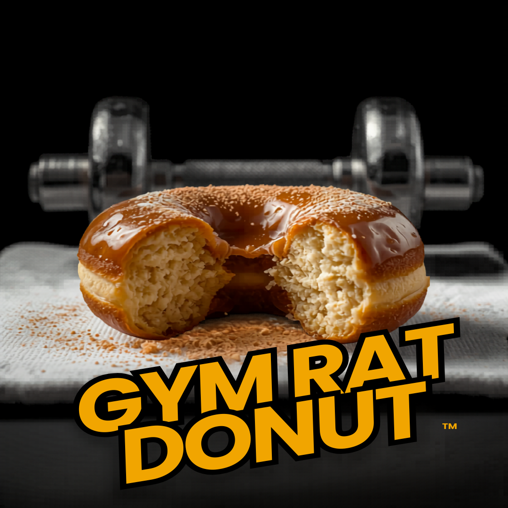
Full-size glazed donut with 20g protein and 5g creatine. Maximum indulgence meets maximum function. Viral potential.
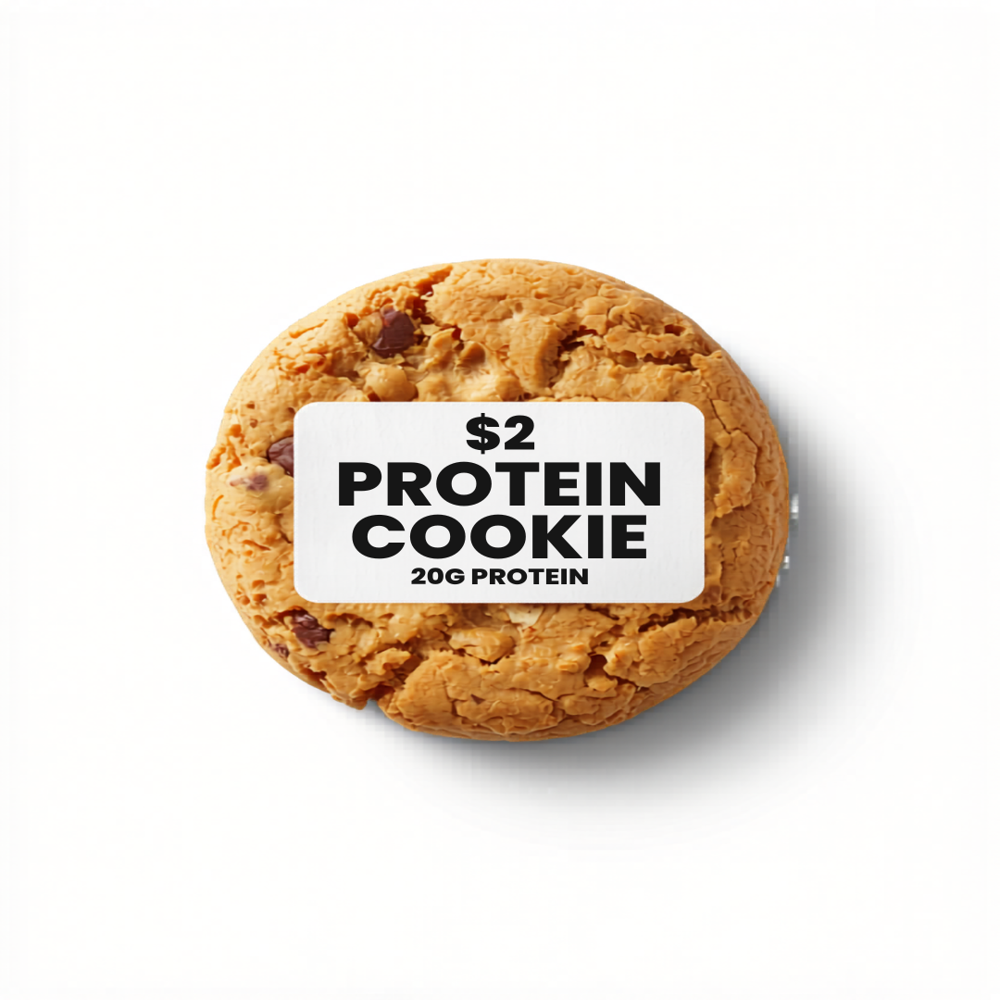
No-frills, 20g protein, clean label, fresh-baked. Undercuts Quest and Lenny & Larry's at half the price point. Mass market accessibility.
Creatine is no longer a bodybuilder supplement — it's going mainstream via TikTok, wellness culture, and cognitive health research. First brand to put it in bakery owns the category.
Consumers trust the bakery case more than the protein bar aisle. Fresh-baked with a short ingredient list beats processed bars with 40 ingredients every time.
Grocers are desperate to differentiate the bakery department. Functional baked goods give them a new reason-to-visit that Amazon can't replicate.
Chewy, golden-brown blondie bars loaded with 5g creatine monohydrate per serving — sold in the bakery grab-and-go case, not the supplement aisle. This is creatine for people who don't want another scoop of powder in their shake. It's the first product that treats creatine as a baking ingredient rather than a gym supplement.
The insight: creatine is flavorless, heat-stable, and water-soluble — it was built for baking. The fact that nobody has put it in fresh bakery items yet is a timing gap, not a technical barrier. TikTok has already normalized creatine for non-lifters (cognitive benefits, hydration, longevity). The format just hasn't caught up.
The execution path is clear: creatine monohydrate is cheap ($8-12/kg wholesale), shelf-stable, and requires no special equipment. Any regional bakery co-packer can add it to an existing blondie recipe and test within a week.
Bare Performance Nutrition: Creatine gummies ($30/60ct) — supplement format, not food. Pharmacy/online only.
Create Creatine: Creatine-infused drinks ($3-4/can). Beverage, not bakery. Limited distribution.
The Gap: No one has put creatine into a fresh-baked, in-store bakery item. The entire category is unoccupied. Supplement brands think in supplements; bakery brands don't think in functional ingredients.
Manufacturing: Standard bakery co-pack. Creatine monohydrate is a dry powder — mix into batter like any other ingredient. No equipment changes.
Supply chain: Ambient temp, no cold chain. Creatine is shelf-stable. Standard bakery packaging.
Fulfillment: Bakery grab-and-go case or DTC ship. No special handling.
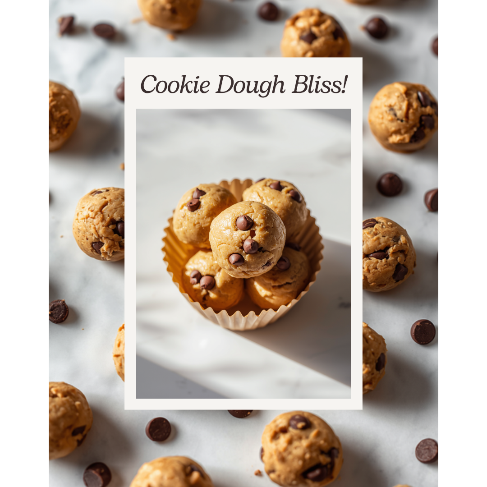
Bite-size raw cookie dough balls with 10g protein each, heat-treated flour, no artificial ingredients. Sold in the bakery case in a clear cup so you can see exactly what you're getting. This is the "I deserve a treat" product for people who read ingredient labels.
The cookie dough snack category is growing fast (Dō, Deux) but it lives in the freezer aisle with processed positioning. Moving it to the fresh bakery case with a clean label and protein changes the perception entirely — from guilty pleasure to smart snack.
What bakery case buyers actually care about: margin per linear foot, spoilage rates, and whether the product drives incremental trips. Cookie dough bites check all three.
Deux: $6-8/jar, frozen, DTC-first. Clean label, viral TikTok presence. But frozen = friction.
Dō: NYC-based cookie dough shop. $7-9/cup. Retail presence growing but no protein positioning.
Lenny & Larry's: "Complete Cookie" — packaged, processed, 16g protein. Not fresh, not premium.
The Gap: Fresh bakery case, clean label, protein-fortified, bite-size format. Nobody occupies this intersection.
Manufacturing: Mix and portion. No baking required. Heat-treated flour is the key input — readily available from suppliers like Ardent Mills.
Supply chain: Refrigerated (not frozen). 14-day shelf life. Standard bakery case temps (35-40°F).
Packaging: Clear cups with snap lids. Macro label front-of-pack.
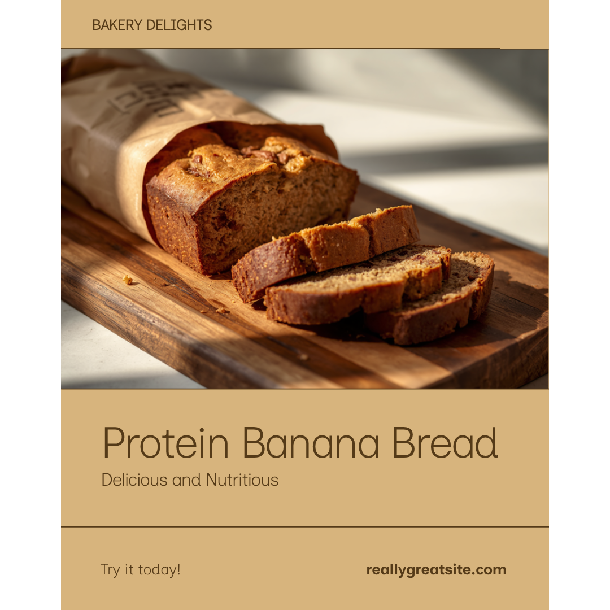
Fresh-baked banana bread with 25g protein per slice, sold in the bakery case in individual kraft-wrapped slices. Optional creatine add-on as a variant SKU. This is the product that replaces the post-gym protein bar with something that tastes like your mom's kitchen.
Banana bread is the #1 comfort baked good in America — it's emotionally loaded. Nobody has positioned it as a recovery food. The protein comes from whey isolate and Greek yogurt baked into the batter, which actually improves moisture and texture. It's better banana bread that happens to be functional.
Kodiak Cakes: Frozen protein banana bread mix ($5.99). Make-at-home, not grab-and-go. Processed feel.
Simple Mills: Clean-label banana bread mix ($5.49). No protein positioning. Mix format only.
The Gap: Fresh-baked, single-serve, protein-fortified banana bread in the bakery case. Zero competition.
Manufacturing: Standard banana bread recipe with whey isolate substitution. Any bakery co-packer can produce.
Shelf life: 5-7 days (standard banana bread). Individual kraft wrap extends by 1-2 days.
Fulfillment: Ambient temp. Bakery case or wrapped grab-and-go.
A fresh-baked protein cookie positioned explicitly against the processed protein bar aisle. The name says it: NOT A BAR. Eliminate the wrapper. Eliminate the preservatives. Eliminate the chalky texture. Raise the taste. Raise the freshness. Create "bakery as performance fuel" as a positioning.
The protein bar aisle is a $5.6B category where every brand competes on the same axis: more protein, fewer calories, more flavors. Nobody is attacking the category from the fresh bakery direction. The Anti-Protein Bar doesn't compete with Quest — it makes Quest feel like eating cardboard.
This is a Blue Ocean play: don't fight for share in the protein bar aisle, create a new purchasing occasion in the bakery department.
Quest ($2.50-3.00): Market leader. 20g protein. Processed, long shelf life. Available everywhere.
RXBAR ($2.50-3.00): Clean label pioneer ("No B.S."). Still a wrapped, processed bar.
Lenny & Larry's ($2.99): "Complete Cookie" — closer to bakery, but packaged and processed.
The Gap: None of these are fresh. None live in the bakery case. The "anti" positioning doesn't exist.
Manufacturing: It's a cookie with whey protein. Standard bakery production.
Shelf life: 5-7 days. This is a feature, not a bug — freshness is the positioning.
Scale: Start with one bakery partner. Brand and positioning do the heavy lifting, not manufacturing complexity.
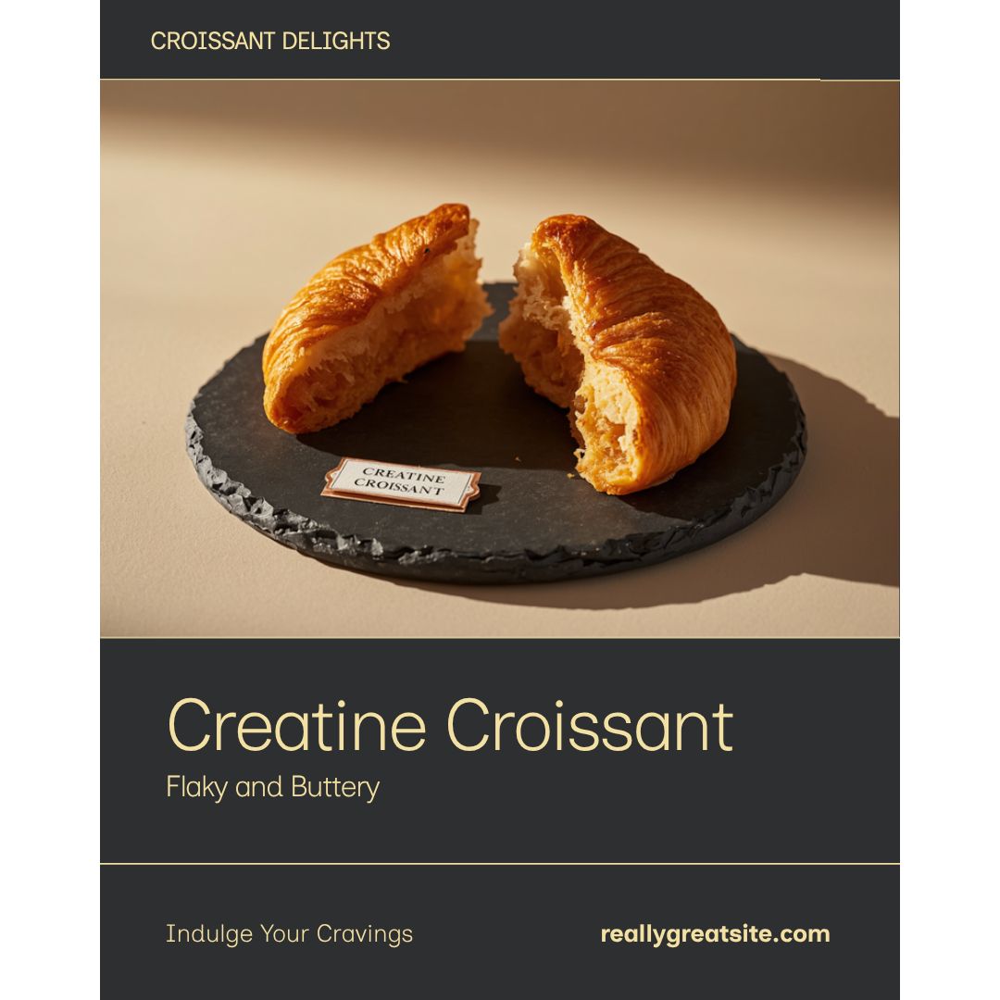
A flaky, butter-forward croissant with 3g creatine monohydrate baked in. The most indulgent bakery format meets the most talked-about supplement ingredient. This is the product that kills the assumption that functional food has to taste like health food.
Croissants are the ultimate indulgence signal — they say "I chose pleasure." Adding creatine (which is tasteless) doesn't change the experience. It just adds a reason to choose this croissant over any other croissant. That's the insight: you're not sacrificing anything. You're just getting more.
La Boulange / Panera: Premium croissants ($3-4). No functional ingredients.
Trader Joe's: Almond croissants ($4.49/4ct). Clean label but no performance angle.
The Gap: Functional croissant is a category that doesn't exist. First mover defines the rules.
Manufacturing: Laminated dough is more complex than standard baking. Requires a co-packer with croissant capability.
Creatine integration: Needs testing to confirm no impact on lamination quality. Likely mix into butter block.
Shelf life: 2-3 days fresh. Frozen par-bake extends to weeks — bake off in-store.
Weekly rotating flavors of protein cookies with limited-edition drops, social-first marketing, and a "Weekly Drop" box format. Borrow Crumbl's proven hype model — rotating flavors, FOMO-driven purchasing, Instagram-native presentation — and apply it to functional protein cookies. Each cookie: 20g protein, clean label, thick and indulgent.
Crumbl proved that cookies can be a hype product. They did $1B+ in revenue with zero functional differentiation — just sugar, butter, and social media. Imagine that same energy applied to a product that actually gives the consumer something beyond a sugar crash. The protein angle adds a reason to buy weekly beyond novelty — it's a guilt-free repeat purchase.
This is the highest-scored concept because it combines a validated business model (Crumbl's weekly drop), the hottest functional ingredient trend (protein), and a proven consumer behavior (FOMO-driven purchasing) into a single product.
Crumbl ($4-5/cookie): $1B+ revenue. Weekly rotating flavors. Zero functional positioning — pure sugar indulgence.
Lenny & Larry's ($2.99): Protein cookies but packaged, processed, no rotation, no hype model.
Quest Cookies ($2.50): 15g protein, wrapped, shelf-stable. Anti-fresh. Anti-hype.
The Gap: Nobody combines weekly-drop hype model + fresh bakery + protein. This is three proven elements that haven't been combined.
Manufacturing: Requires a flavor development pipeline — new recipes every week. Protein baking R&D needed for each flavor to maintain texture.
Supply chain: Fresh = short shelf life (5-7 days). Need local production or frozen ship + thaw model.
Social ops: Weekly content production is a separate operational stream. Need dedicated social team/creator partnerships.
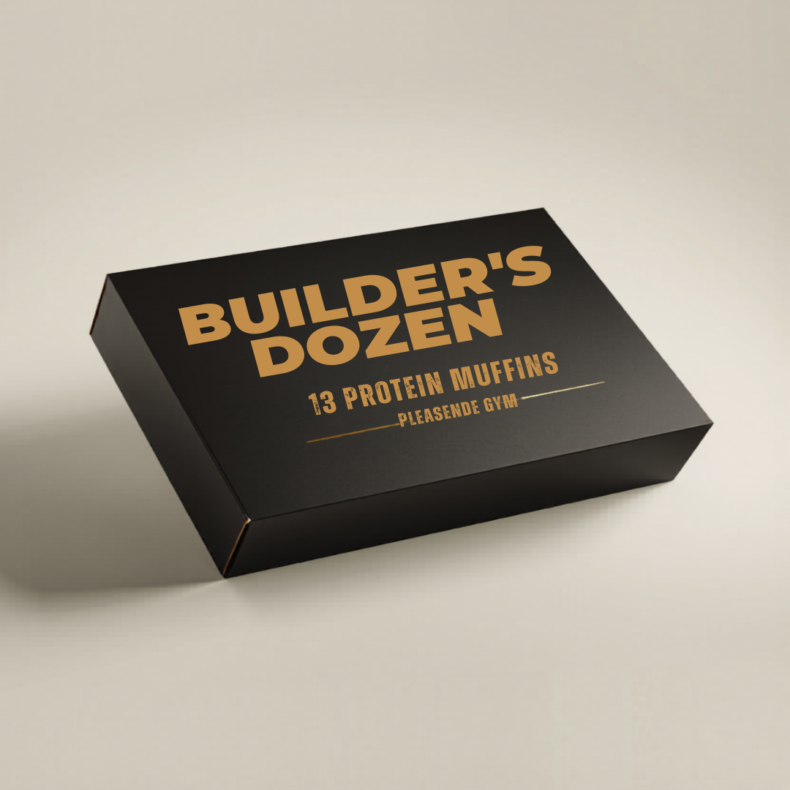
A 13-pack of mini protein muffins in a black-and-gold box branded for the gym crowd. "Builder's Dozen" — a play on "baker's dozen" that immediately signals who this product is for. Each mini muffin delivers 8g protein. Eat 3-4 as a pre-workout snack or post-gym recovery.
The name does the positioning work. It's instantly understood by the target consumer (anyone who lifts, builds, or trains) and it borrows the familiarity of a classic bakery concept (baker's dozen). The mini format makes it portion-flexible — eat 2 for a light snack, eat 5 for a meal replacement.
Kodiak Cakes Muffins ($4.99/4ct): Protein muffins, frozen, standard flavors. No brand personality for gym crowd.
Costco Protein Muffins ($9.99/6ct): Massive muffins, decent protein. Generic bakery presentation.
The Gap: No mini-format, gym-branded, premium-packaged protein muffin exists. The name alone is defensible IP.
Manufacturing: Standard mini muffin production with whey protein. Any bakery co-packer with mini muffin pans.
Packaging: Custom branded box (key differentiator). Box design = brand.
Fulfillment: Ambient or refrigerated. DTC shipping feasible.
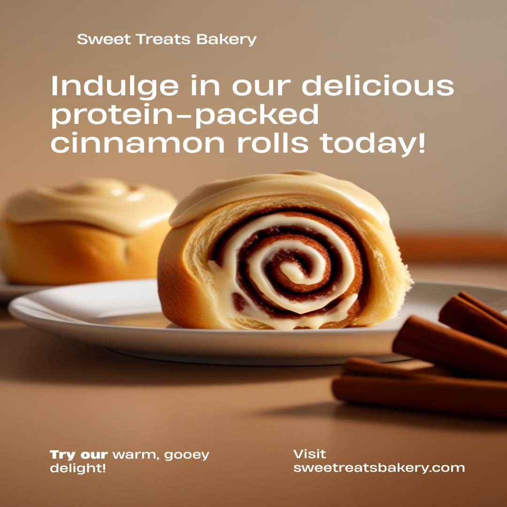
Protein-enriched dough on the outside, clean-label cream cheese frosting core on the inside. Reverse the ratio: more filling, less bread. 15g protein per roll. This isn't just a protein cinnamon roll — it's a cinnamon roll that's been redesigned from the inside out to maximize the part people actually crave (the frosting center) while making the structural part (the dough) do nutritional work.
SCAMPER's "Reverse" prompt produced this. What if the frosting was the core instead of the topping? What if the dough was the protein delivery mechanism instead of empty carbs? The result is a product that's visually distinctive (cut one open and the cross-section is Instagram content) and functionally superior.
Cinnabon ($5-7): Premium cinnamon rolls. No protein. Traditional format.
Pillsbury ($3.99/5ct): Mass market, tube format. Zero innovation in 30 years.
The Gap: No "inside-out" format exists in bakery. No protein cinnamon roll at retail. This is two white spaces stacked.
Manufacturing: Filled dough products need injector/depositor equipment. Not every bakery co-packer has this.
R&D: Protein dough behaves differently — needs testing for elasticity and rise around filling.
Cold chain: Cream cheese filling = refrigerated. 7-10 day shelf life.
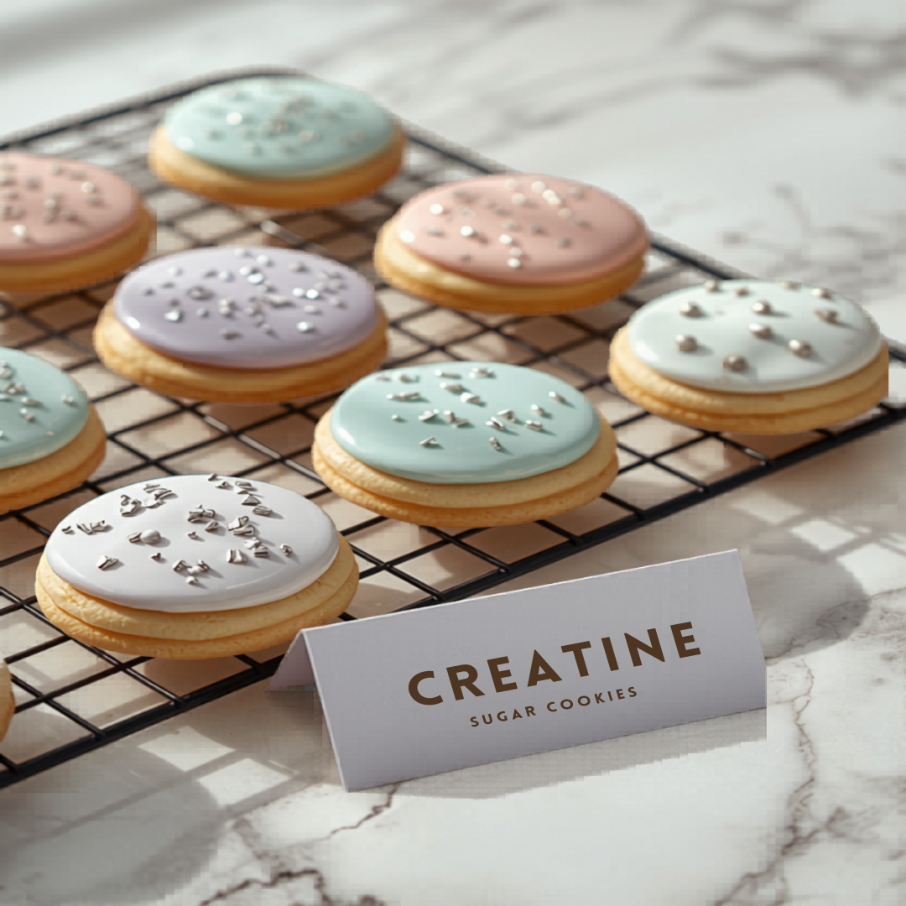
Classic iced sugar cookies with creatine monohydrate blended into the royal icing. Zero taste difference. The creatine is in the frosting — the sweetest, most flavorful part of the cookie — where it's completely undetectable. This is SCAMPER's "Substitute" at its simplest: swap regular icing for creatine icing. Same cookie. Better cookie.
Sugar cookies are the ultimate bakery commodity — every grocery bakery makes them, and they all taste the same. Adding creatine doesn't change the experience, but it gives the consumer a reason to choose your sugar cookie over every other sugar cookie. First-mover advantage in the most commoditized bakery product.
Grocery bakery sugar cookies ($3.99-5.99/dozen): Every grocer has them. Zero differentiation.
Crumbl: Premium sugar cookies ($4-5 each) but no functional angle.
The Gap: Functional icing is a concept that doesn't exist in any bakery format. First to market owns it.
Manufacturing: Standard sugar cookie production. Only change: creatine added to icing mix.
Zero equipment change. Zero process change. Zero training required.
Scale: Any bakery currently making sugar cookies can make this tomorrow.
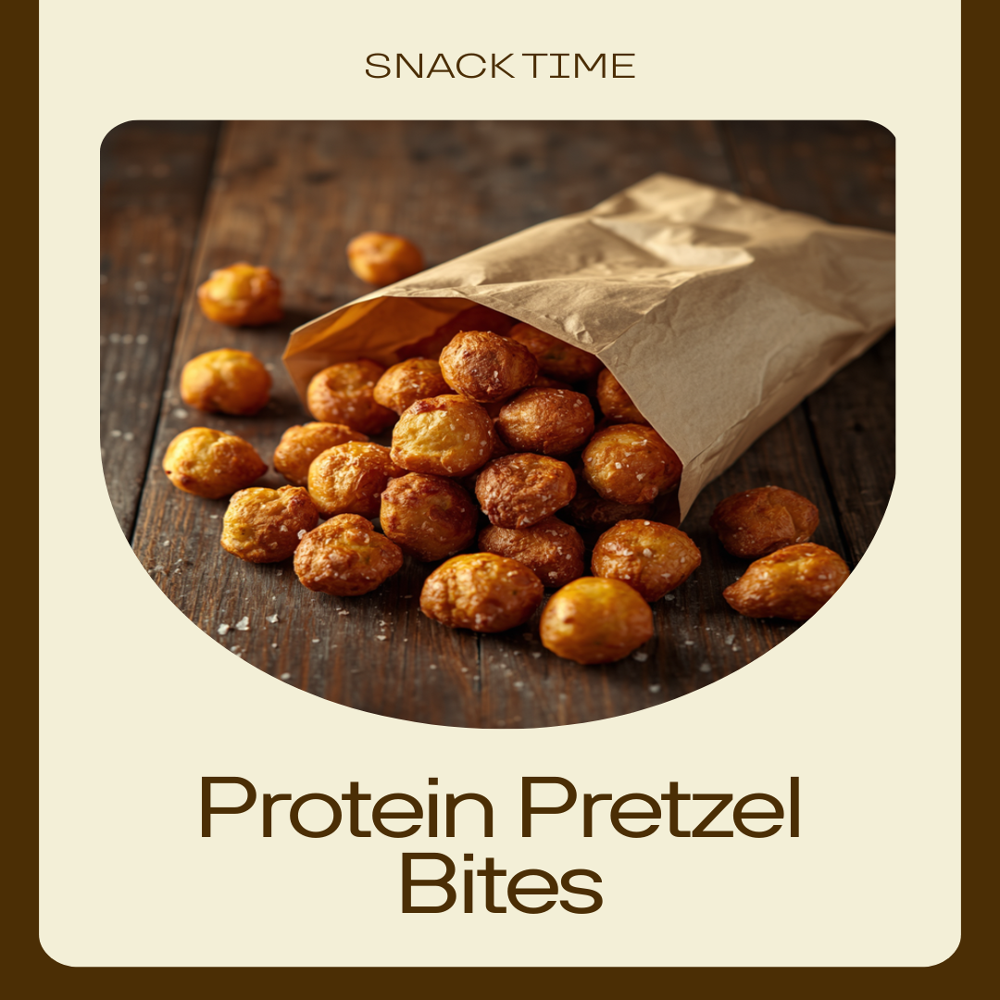
Soft pretzel bites with whey protein baked into the dough, sold in a kraft paper bag in the bakery grab-and-go section. 15g protein per bag. Coarse salt, warm, chewy, and satisfying. This is SCAMPER's "Adapt" — take a universally loved snack format and adapt it for the protein-seeking consumer.
Soft pretzels are already the #1 "impulse bakery buy" at grocery — they're bought on emotion and craving, not on a list. Adding protein gives the consumer retroactive justification for the impulse: "It's fine, it has 15 grams of protein." That post-purchase rationalization is the unlock.
Auntie Anne's (mall): Dominates soft pretzels but no grocery presence and no protein.
SuperPretzel (frozen, $4.49): Grocery leader but frozen and standard. No protein.
The Gap: Fresh, protein-enriched, bakery-case soft pretzel bites. Zero competition.
Manufacturing: Standard soft pretzel production + whey in dough mix. Lye bath unchanged.
Shelf life: Same day to 2 days. Matches standard soft pretzel fresh-bake cadence.
Packaging: Kraft paper bag, sticker label. Low packaging cost.
A full-size glazed donut with 20g protein and 5g creatine. The most indulgent bakery format meets peak performance positioning. Named for the person who'd eat it — the gym rat who trained hard enough to earn this. "I earned this" is the entire brand ethos.
This is the Mashup Method at its most provocative: take the most "anti-health" bakery item (a donut) and combine it with the most "pro-health" supplement stack (protein + creatine). The cognitive dissonance is the marketing. Nobody can scroll past "protein creatine donut" without stopping.
Dunkin' ($1.50-3): 12,000 locations, zero functional products. Legacy brand.
Krispy Kreme ($1.79-2.99): Same — mass market, zero protein or functional angle.
The Dough Bar ($5.99): Online-only protein donuts. Small brand, DTC-first, frozen shipped. Proves demand exists.
The Gap: Fresh, in-store, protein + creatine donut with bold branding. Nobody.
Manufacturing: Cake donut base + whey protein + creatine. Standard donut production equipment.
Glaze: Standard glaze recipe. Can add creatine to glaze for even distribution.
Shelf life: Same-day to 2 days. Standard donut cadence.
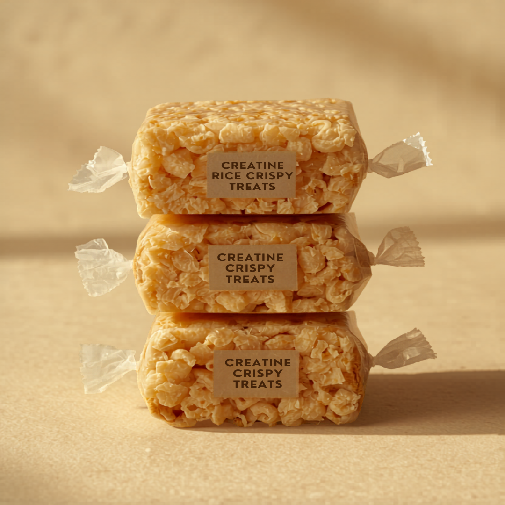
Classic rice cereal treats with creatine and collagen mixed in. Three ingredients you know (rice, marshmallow, butter) plus two ingredients that make it functional. Individually wax-paper wrapped, sold in the bakery grab-and-go. Nostalgia meets function.
Rice Krispie treats are one of the cleanest "junk foods" in existence — they have almost no ingredients. Adding creatine and collagen doesn't complicate the label. It stays a 6-ingredient product. That clean-label simplicity is the trust signal that health-conscious consumers need to feel good about eating what is, at its core, a marshmallow square.
Kellogg's Rice Krispie Treats ($4.49/8ct): Mass market, packaged, no functional ingredients.
Treat Yourself (DTC): "Gourmet" rice treats with flavors. No protein or creatine.
The Gap: Functional rice cereal treats. Nobody has combined the nostalgic format with performance ingredients.
Manufacturing: Melt marshmallow, add creatine + collagen, mix with cereal, press, cut. No ovens needed.
Shelf life: 7-14 days at ambient temp. Very forgiving.
Packaging: Individual wax paper wrap. Low cost, classic feel.
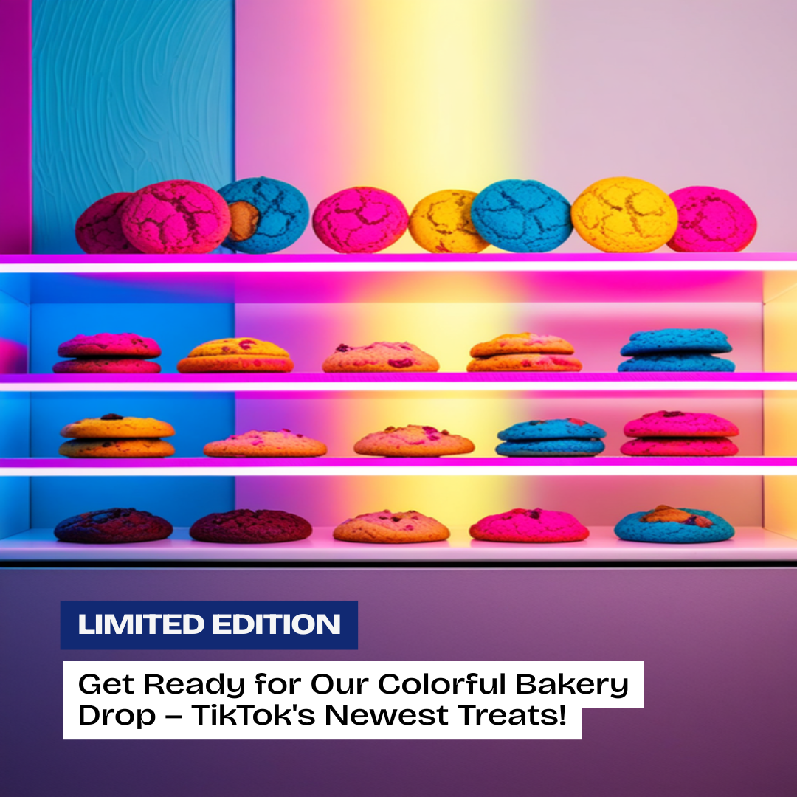
Weekly limited-edition functional bakery items designed for virality first, flavor second. Creatine gummy bear cookies one week, protein matcha scones the next, collagen red velvet brownies the week after. Each drop is a content event — announced on TikTok, available for 7 days, then gone forever.
This is streetwear's "drop model" applied to bakery. Supreme proved that artificial scarcity drives demand. Crumbl proved it works for cookies. This takes it one step further: every drop has a functional angle, so the content isn't just "look how pretty" — it's "look what this cookie does." The educational component (what is creatine? what does collagen do?) adds a second layer of shareable content.
Crumbl: Weekly drops but zero functional angle. Pure indulgence.
Mr. Beast / Feastables: Hype-driven food brand. Chocolate bars, not bakery. No function.
The Gap: Nobody is doing functional food drops. The combination of FOMO + education + function hasn't been assembled.
Manufacturing: New recipe every week. Requires dedicated R&D capability or a very flexible co-packer.
Content: Weekly content production cycle — photography, video, copy. Need creator partnerships or in-house team.
Logistics: Small-batch production with rapid turnaround. DTC shipping or local retail only.
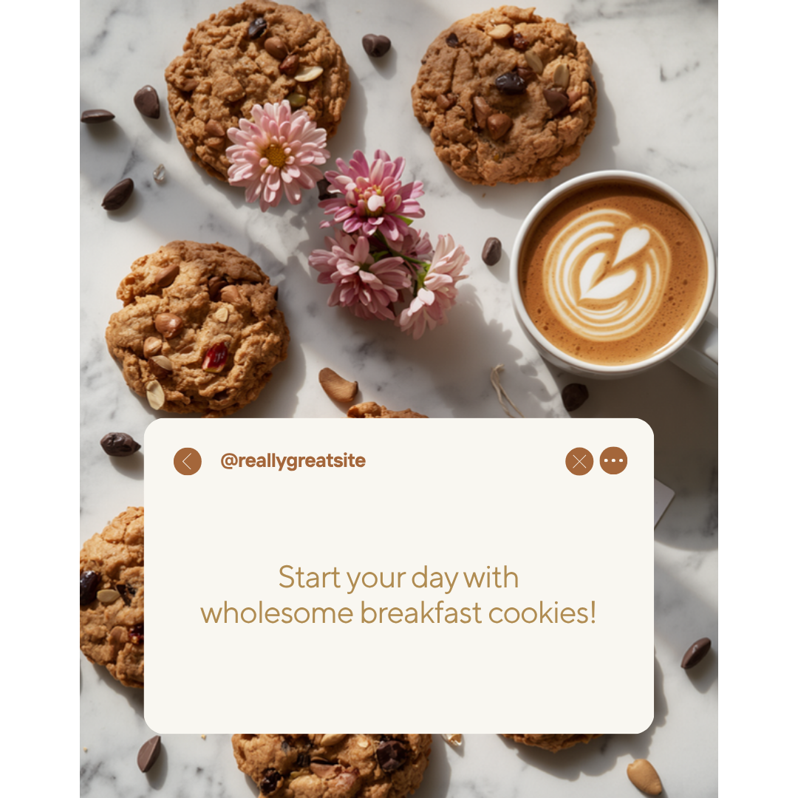
Aesthetic, clean-label breakfast cookies with oats, protein, creatine, chia, and dark chocolate. Positioned for the "That Girl" wellness consumer — the person who journals, does pilates, and photographs their morning routine. The cookie has to be as photogenic as it is functional.
"That Girl" is a cultural archetype, not a demographic. She exists on TikTok and Instagram as the aspirational version of wellness — organized, intentional, put-together. A breakfast cookie that fits her morning routine (coffee + protein cookie + journal) becomes part of her identity expression, not just a food purchase. The aesthetic IS the product.
Partake ($5.99/box): Clean-label cookies, allergy-friendly. Not breakfast-positioned, no protein.
Kakookies ($3.50/cookie): Oat-based breakfast cookies. Clean but not aesthetic or protein-focused.
The Gap: No breakfast cookie brand owns the "That Girl" aesthetic. The visual identity is unclaimed.
Manufacturing: Oat-based cookie with protein and chia. Standard bakery production.
Packaging: Brand packaging is the key investment. Product is simple; shelf appeal is everything.
Distribution: DTC-first (the target consumer shops online). Retail expansion into Whole Foods / Erewhon tier.
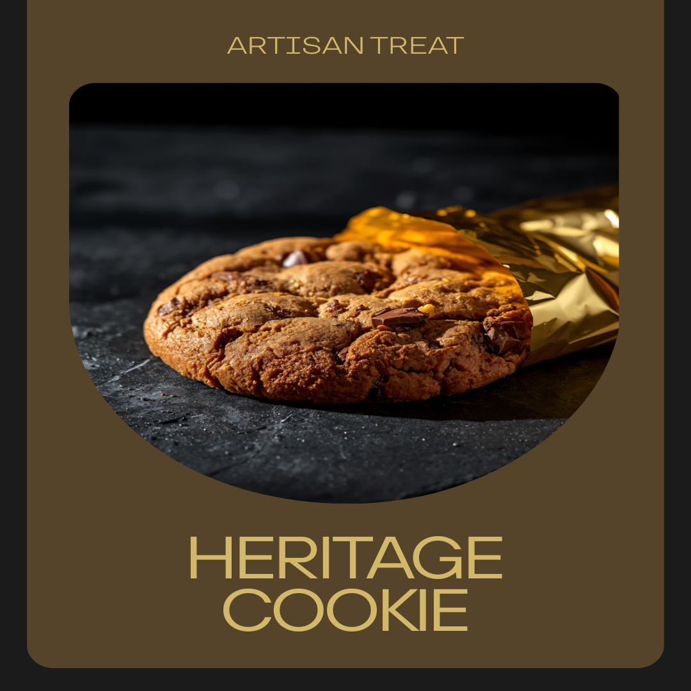
A single, large artisan cookie made with European butter, single-origin vanilla, grass-fed whey protein, and dark chocolate from a named estate. Sold individually for $8 in gold foil wrapping. This isn't a health food — it's a luxury treat that happens to deliver 20g protein. The premiumization lens says: don't compete on health claims, compete on craft and ingredient story.
The premium cookie market is exploding ($8-12 single cookies at Levain, Chip City, etc.) but none of them have a functional angle. Adding grass-fed whey protein doesn't compromise the cookie — it actually improves chewiness and moisture. You're not sacrificing to add protein. You're making a better cookie that also happens to be functional.
Levain ($5-6/cookie): Premium, NYC-famous. No protein, no functional angle.
Chip City ($4-5/cookie): Premium, rotating flavors. No protein.
Quest Protein Cookies ($2.50): Protein but processed, wrapped, mass market. Anti-premium.
The Gap: Nobody has combined artisan/luxury cookie positioning with functional protein. Two separate markets waiting to collide.
Manufacturing: Standard cookie production with premium ingredients. The recipe is simple; sourcing is the differentiator.
Packaging: Individual gold foil wrap. Premium feel at low packaging cost.
Distribution: Start with specialty retail (Erewhon, Whole Foods) and DTC. Premium positioning demands premium channels.
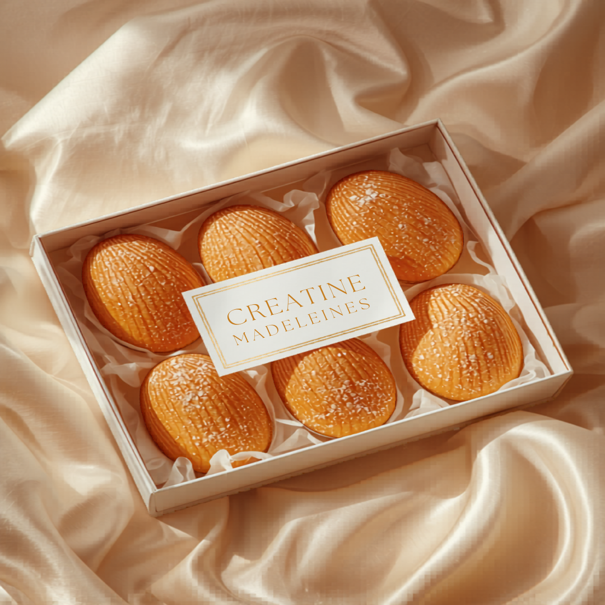
French madeleines with creatine, sold in elegant boxes of 6 for $12. Shell-shaped, dusted with powdered sugar, individually nestled in tissue paper. This is the gift-box play: madeleines are already the most "giftable" bakery item. Adding creatine gives the gift a narrative — you're not just giving someone cookies, you're giving them cookies with benefits.
The premiumization lens reveals that creatine doesn't have to be "gym culture." Positioned inside a French patisserie format, creatine becomes "the ingredient that supports cognitive function and recovery" — wellness language, not bodybuilding language. The audience shifts from gym-goers to high-income wellness consumers.
Donsuemor ($8.99/box): Leading U.S. madeleine brand. Traditional, no functional ingredients.
Ladurée: Luxury French pastry. Madeleines + macarons. No functional angle.
The Gap: Functional premium pastry for gifting. Zero competition in this intersection.
Manufacturing: Madeleine production requires specific molds and technique (resting batter). Not every co-packer has capability.
Packaging: Gift box is a key cost center. Needs to feel premium — tissue paper, box insert, branded sleeve.
Shelf life: 5-7 days. Limits to DTC or local retail. Frozen ship is an option but reduces "fresh" positioning.
A no-frills, 20g protein, clean-label cookie sold individually in the bakery for $2. No luxury positioning, no heritage story, no aesthetic packaging. Just a big, good cookie with 20g protein at a price that makes Quest and Lenny & Larry's look like a ripoff. Downmarket disruption in its purest form.
Every other protein cookie on the market is $3-5 and packaged to justify the price. This cookie strips out everything except the thing the consumer actually wants: protein in a cookie at a price they don't have to think about. The $2 price point puts it in impulse-buy range for everyone — not just the macro-tracking gym crowd. This is how you take protein bakery from niche to mass market.
Quest ($2.50-3.00): Packaged, processed, available everywhere. The incumbent to undercut.
Lenny & Larry's ($2.99): "Complete Cookie." Processed, wrapped, 16g protein.
The Gap: No one offers a fresh-baked protein cookie under $2.50. The entire market is overpriced for what it delivers.
Manufacturing: Standard cookie + whey protein. Simplest recipe possible to hit cost target.
Packaging: Minimal — clear clamshell or paper bag. No premium packaging cost.
Scale: Designed for grocery bakery volume production. Scale is the strategy.
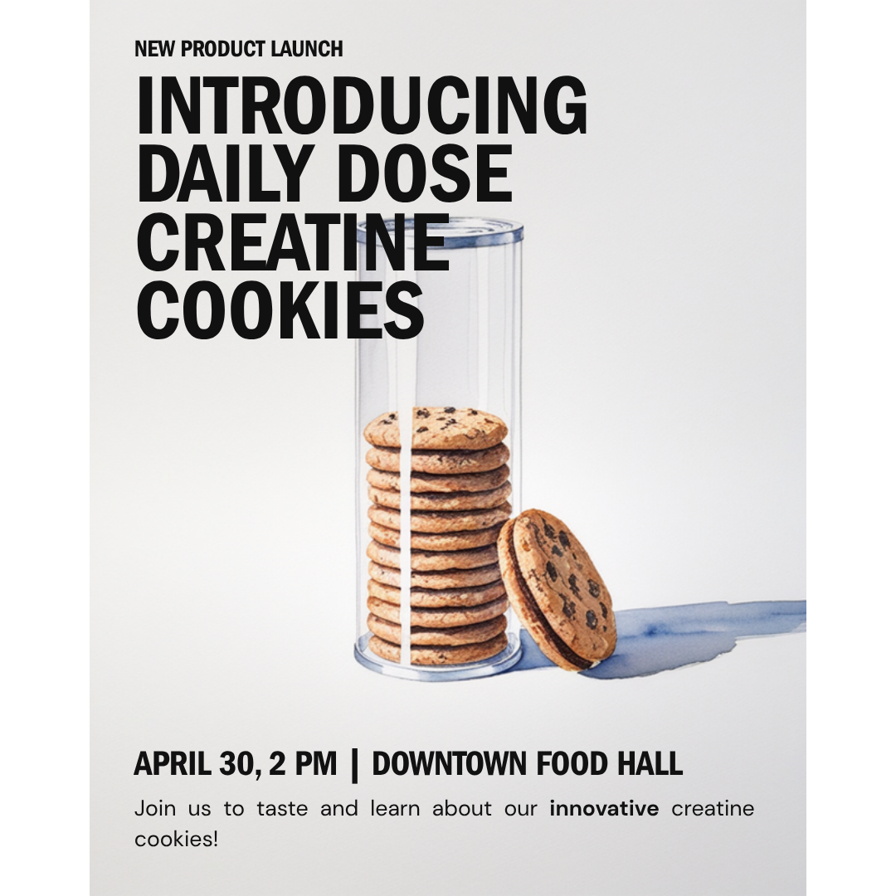
Five creatine cookies stacked in a clear cylindrical tube — like Pringles or tennis balls. Each cookie contains 1g creatine. One tube per week = your daily creatine dose, delivered via cookie. The packaging makes dosing intuitive and visual: you can see how many are left, and "one cookie a day" is the simplest supplement protocol ever designed.
This is Packaging Innovation (#58) at its best — same product (creatine cookie), radically different format. The tube transforms a commodity bakery item into a structured supplement delivery system. It looks different on the shelf, it creates a daily ritual, and it gives the consumer a reason to buy the entire tube instead of individual cookies.
No direct competitor exists. Tube-format cookies are rare (some European brands). Tube-format functional cookies = zero.
Pringles: Proved that tube format creates distinctive shelf presence and repeat purchase behavior in snacks.
The Gap: The format itself is the competitive moat. First to market with tube-format functional cookies owns the visual space.
Packaging: Custom tube sourcing required. Need consistent cookie diameter for stacking. Tubes need food-safe lining.
Manufacturing: Cookies must be uniform size (critical for tube stacking). Requires portioning discipline.
Fulfillment: Tubes are sturdy for shipping. DTC-friendly format.
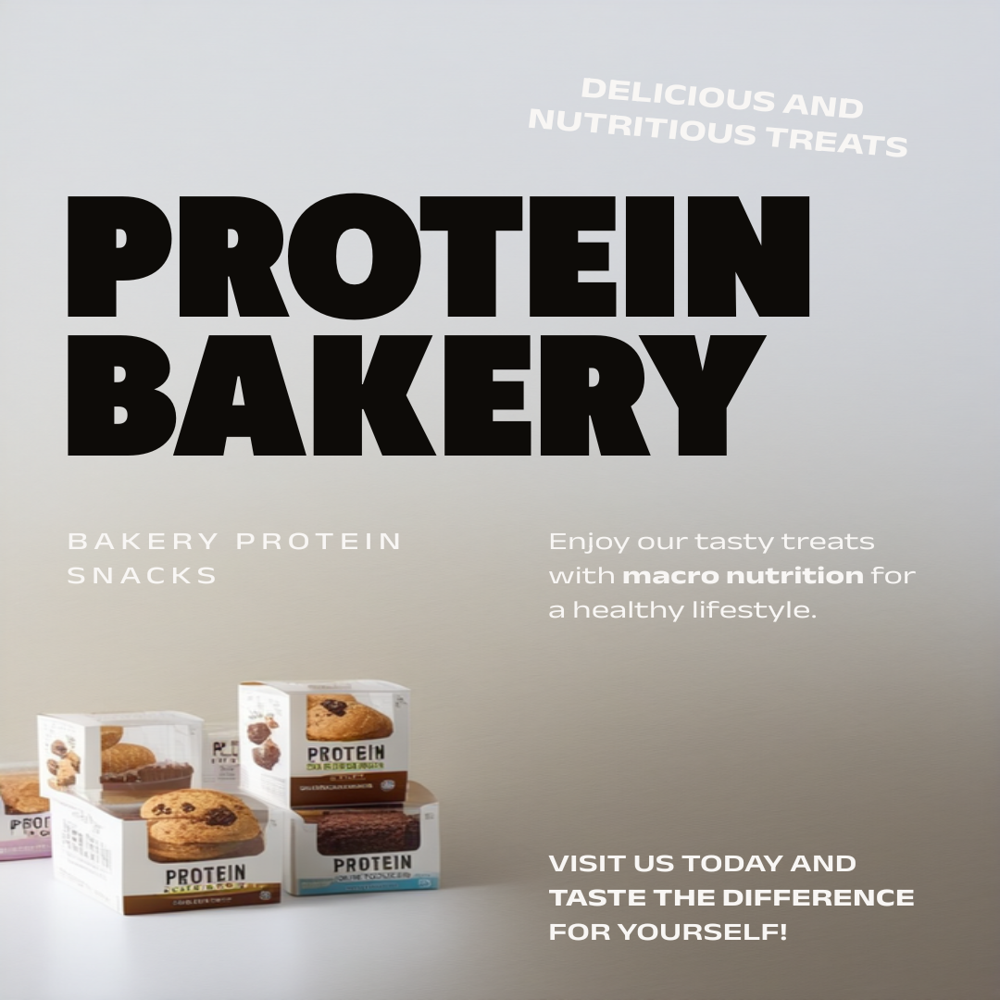
Bakery items packaged in clear-top boxes that show the product AND display macros prominently on the front. The clear window says "nothing to hide." Every item — muffin, cookie, brownie — is visible through the top. And right next to it: protein, creatine, calories, fiber, all in a clean, scannable format.
This is a packaging system, not a single product. Any functional bakery item can go into a Clear-Window box. The packaging becomes the brand — consistent clear-top boxes with macro labels become instantly recognizable on any bakery shelf. When a consumer sees the clear window + macro label, they know exactly what they're getting without reading the fine print.
Standard bakery packaging: Opaque boxes, no macro labels, no differentiation. The default is anti-transparent.
RXBar: Proved that front-of-pack ingredient transparency drives purchase. But it's a bar company, not bakery.
The Gap: No bakery brand has built a packaging system around visible product + macro transparency. The system is the moat.
Packaging: Custom clear-top box design. Food-safe clear PET or PLA windows. MOQs for custom packaging can be 5,000-10,000 units.
Labeling: Each product variant needs its own macro label. Label printing and management adds SKU complexity.
Standardization: Products must fit standardized box sizes for the system to work.
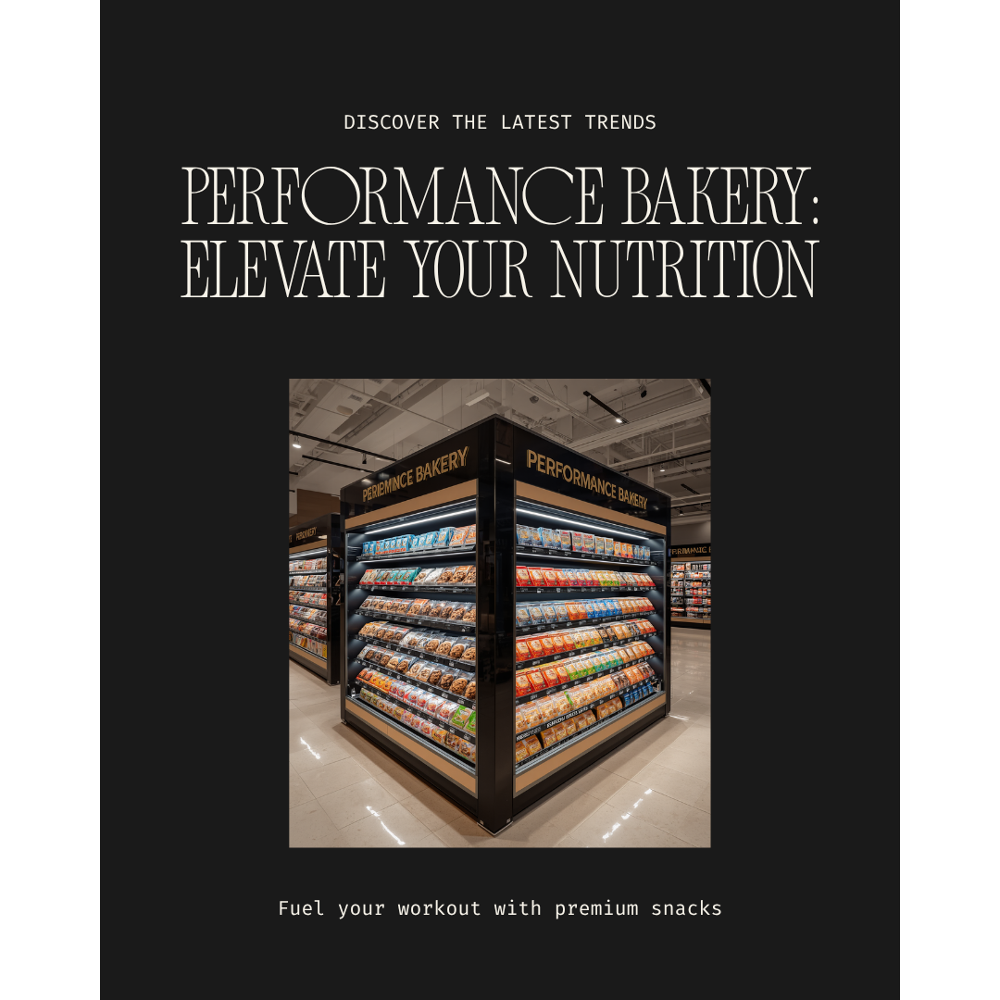
Not a product — a category. Dedicate a section of the in-store bakery to functional baked goods under the "Performance Bakery" banner. Branded signage, macro labels on every shelf tag, black-and-gold visual identity. The endcap houses all the products from this workshop (or any functional bakery brand that qualifies). You're not selling cookies — you're creating the category that cookies live in.
Category Design (#55) says: don't compete in an existing category, create a new one and own the rules. "Performance Bakery" doesn't exist as a category in any grocery retailer today. The retailer who creates it first gets credit for innovating the bakery department — and the brand that supplies it gets default distribution into every location.
No dedicated "Performance Bakery" section exists in any U.S. grocery retailer. This is a category creation play.
Protein bar aisle: Closest analog — but it's processed, packaged, and separate from bakery. Not fresh.
Plant-based sections: Precedent for creating a new grocery category from scratch. Took ~5 years from niche to standard.
The Gap: The entire concept is the gap. First mover defines the category, sets the standards, and gets default shelf placement.
Retail sales: Requires convincing bakery category buyers to dedicate space. Need a compelling deck, data, and ideally a pilot store partnership.
Product supply: Need 10-20 SKUs to fill an endcap. Requires either a broad product line or partnerships with other functional bakery brands.
Merchandising: Custom signage, shelf tags, and POS materials. Upfront investment in retail branding.
This workshop ran 10 ideation methods from the Full-Stack Ideation System against three converging trends identified by Eric: (1) creatine in snack foods, (2) indulgent treats with clean ingredients (Crumbl model), and (3) protein in fresh baked goods for the in-store bakery category. These three inputs defined the category lane: Functional Indulgence — Performance Bakery & Snacks.
32 raw ideas were generated across all 10 methods. Each idea was scored on six criteria: Originality (20%), Market Size (20%), Margin Potential (20%), Visual Appeal (15%), Speed to Prototype (15%), and Research Backing (10%). The bottom 37% was cut, leaving 20 survivors.
| Method | Raw Ideas | Survivors | Hit Rate | Notes |
|---|---|---|---|---|
| Jobs to Be Done (#4) | 4 | 3 | 75% | Consumer job framing produced actionable, low-effort ideas |
| Blue Ocean Strategy (#9) | 3 | 2 | 67% | Eliminate/Create grid revealed fresh bakery vs. protein bar opportunity |
| Analogous Inspiration (#15) | 4 | 2 | 50% | Crumbl model transfer was highest-scored overall concept |
| SCAMPER (#21) | 3 | 3 | 100% | Substitute and Reverse both produced distinctive formats |
| Mashup Method (#24) | 3 | 2 | 67% | Maximum contrast mashups (donut × protein) generated highest viral potential |
| Cultural Trend Mining (#51) | 3 | 2 | 67% | TikTok drop model + "That Girl" persona both validated by massive existing audiences |
| Premiumization Lens (#56) | 3 | 2 | 67% | Premium positioning + protein = untapped intersection. Heritage cookie scored highest. |
| Downmarket Disruption (#57) | 2 | 1 | 50% | $2 cookie concept scored high on market size, needs "quality floor" to avoid commodity trap |
| Packaging Innovation (#58) | 3 | 2 | 67% | Tube format and clear-window system both received strong scores on differentiation |
| Category Design (#55) | 4 | 1 | 25% | "Performance Bakery" category concept is ambitious but high-effort. Other concepts were merchandising ideas, not products. |
Methods from Full-Stack Ideation System (100 methods). Selection based on product innovation cluster + category-specific relevance.
Three markets are converging to create the "Performance Bakery" opportunity:
1. The Creatine Expansion ($590M projected by 2028)
Creatine monohydrate has crossed from bodybuilding to mainstream wellness. TikTok normalized it for non-lifters — cognitive benefits, hydration, longevity. The supplement form factor (powder, pills) is being disrupted by food-format delivery (gummies first, now snacks). Creatine's properties (flavorless, heat-stable, water-soluble) make it ideal for baking. No bakery brand has entered.
2. The Clean-Label Indulgence Movement ($7.2B protein snack market)
Crumbl proved consumers will pay $5 for a cookie if it's thick, indulgent, and Instagram-worthy. But Crumbl has no functional angle — it's pure sugar and butter. Meanwhile, Lenny & Larry's proved consumers will buy protein cookies, but they're processed and wrapped. The gap: fresh, clean-label, indulgent cookies with protein. Nobody occupies this intersection.
3. The In-Store Bakery Renaissance ($25B category)
Grocery bakery departments are the last bastion of in-store differentiation that Amazon can't replicate. But they haven't been functionally innovated since the introduction of the croissant. Grocers are actively seeking ways to drive bakery traffic and margin. Functional baked goods give them a new reason-to-visit and a premium pricing opportunity.
| Brand | Format | Protein | Creatine | Fresh | Price |
|---|---|---|---|---|---|
| Quest | Wrapped bar/cookie | 20g | No | No | $2.50-3.00 |
| Lenny & Larry's | Wrapped cookie | 16g | No | No | $2.99 |
| RXBAR | Wrapped bar | 12g | No | No | $2.50-3.00 |
| Crumbl | Fresh cookie | 0g | No | Yes | $4-5 |
| Kodiak Cakes | Frozen mix/muffin | 12-14g | No | No | $4.99-5.99 |
| Deux | Frozen dough | 0g | No | No | $6-8/jar |
| Performance Bakery | Fresh bakery | 20g | Yes | Yes | $2-8 |
No existing brand combines fresh bakery format, high protein, creatine, and clean-label positioning. The entire intersection is unoccupied.
Creatine monohydrate is the easiest functional ingredient to integrate into bakery. It's shelf-stable (no cold chain), heat-stable (survives baking temps), water-soluble (dissolves in batters and icings), flavorless, and cheap ($8-12/kg wholesale). Any bakery co-packer can add it to existing recipes with zero equipment changes.
Whey protein isolate requires more recipe development. It affects texture (can make baked goods dense or dry if over-added) and browning (Maillard reaction accelerates). Best practices: stay under 25% of flour weight, use isolate over concentrate, add extra moisture (Greek yogurt, applesauce). Most bakery co-packers have experience with protein addition.
Shelf life is the primary constraint. Fresh bakery = 2-7 days. This limits distribution to local/regional. Frozen par-bake extends to 90+ days but adds cold chain cost. The operational model depends on which distribution strategy you choose: local fresh (higher quality, limited reach) vs. frozen ship (broader reach, more complexity).
Co-packing landscape: Regional bakery co-packers are abundant and hungry for innovation projects. MOQs as low as 500 units for test runs. Key requirement: NSF or GMP certification for supplement-grade ingredient handling. Not all bakery co-packers have this — it's the primary screening criterion.
Comparing method hit rates across both workshop runs:
| Method | Run 1 (CPG) | Run 2 (Bakery) | Combined | Assessment |
|---|---|---|---|---|
| JTBD (#4) | 100% | 75% | 88% | Consistently strong — real consumer jobs = defensible ideas |
| Blue Ocean (#9) | 67% | 67% | 67% | Reliable. Eliminate/Create grid forces novel formats. |
| Analogous (#15) | 100% | 50% | 75% | Hit rate drops when cross-industry transfers are too forced |
| SCAMPER (#21) | 100% | 100% | 100% | Best performing method across both runs. Modify/Reverse always produces. |
| Mashup (#24) | 67% | 67% | 67% | Consistent. Wide contrast mashups score highest. |
| Cultural Trend (#51) | 100% | 67% | 83% | Strong when tied to specific audiences (TikTok, "That Girl") |
| Premiumization (#56) | 100% | 67% | 83% | Premiumization + function is an underexplored intersection |
| Downmarket (#57) | 50% | 50% | 50% | Needs "quality floor" constraint to avoid commodity trap |
| Packaging (#58) | 100% | 67% | 83% | Format innovation consistently scores on differentiation |
| Category Design (#55) | 33% | 25% | 29% | Ambitious but consistently low on "speed to prototype" |
SCAMPER (#21) is the only method to maintain 100% hit rate across both runs. Category Design (#55) consistently produces ambitious concepts that score low on execution feasibility. Recommend: use SCAMPER as anchor method, use Category Design sparingly (once per run max).
IDDBA / IRI (2025) — U.S. in-store bakery market sizing
Grand View Research (2025) — Global creatine supplement market report
Mordor Intelligence (2025) — U.S. protein snack market analysis
Innova Market Insights (2025) — Clean label consumer survey
Mintel (2025) — Protein bar consumer attitudes report
Hartman Group (2025) — Fresh vs. packaged protein preferences survey
FMI (2025) — Power of In-Store Bakery report
IFIC (2025) — Macro tracking consumer behavior survey
Packaging World (2025) — Packaging transparency consumer study
McKinsey Consumer Pulse (2025) — Gen Z food purchasing behaviors
Avgerinos et al. (2018) — Effects of creatine supplementation on cognitive function
Whole Foods Market (2026) — Annual food trend predictions